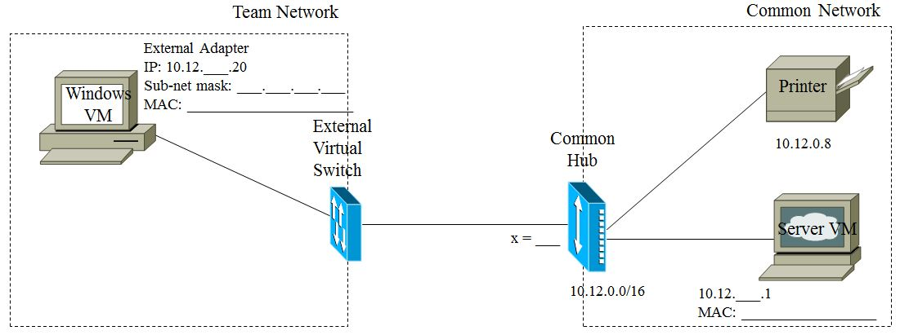

Ce laboratoire vise à:
Ce laboratoire est une introduction supplémentaire à l'environnement de laboratoire au sein de l'environnement virtuel du laboratoire de sécurité des réseaux informatiques. Vous allez configurer un petit réseau composé de quelques ordinateurs ordinaires (mais virtuels!), d'un ordinateur central hébergeant un serveur telnet, un serveur ftp et un serveur Web, un concentrateur (hub) Ethernet et un standard de connexion (patch panel). Vous utiliserez aussi un outil de reniflage qui vous permettra de faire des captures de paquets du trafic étant diffusé sur le réseau. L’analyse de ces captures de trafic vous aidera à comprendre la structure des communications réseaux basées sur les datagrammes et de l’encapsulation de protocoles.

Figure 1 - Configuration réseaux est votre numéro d'utilisateur.10.12.0.0/16. C’est à dire que les premiers 16 bits des adresses IP sur ce réseau décrivent l’adresse de réseau, et que les 16 dernier bits décrivent l’adresse des ordinateurs. Le masque de sous-réseau indique à l’ordinateur quels bits correspondent à l’adresse réseau. Ceci signifie que le masque de sous-réseau pour ce réseau est 255.255.0.0, ce qui donne en binaire 11111111.11111111.0.0. 16 bits.
10.12.x.20 comme adresse IP unique de votre Windows VM.ping 10.12.x.20 - pour être certain que vous pouvez communiquer avec votre propre ordinateurping 10.12.x.1 - pour être certain que vous pouvez communiquer avec le serveurping 10.12.0.9 - pour être certain que vous pouvez communiquer avec le serveur SFTP. (Non montré dans la figure 1)alice et password : secret. Utilisez telnet -h ou bien man telnet si vous avez besoin de détails.logoutL’outil windump est une conversion de l’outil tcpdump qui est très populaire sur les systèmes Linux. Vous allez utilisez windump pour capturer et analyser du trafic réseau. Démarrez windump d’une invite de commande.
windump -D pour découvrir les noms et numéros des interfaces réseaux de votre Windows VM
-i pour spécifier l’adaptateur à utiliser comme suit: windump -i 2 (si nous voulions utiliser l’adaptateur 2)-i; windump utilisera l’adaptateur External par défaut.windump -n. L'option -n sert à supprimer les consultation de tables pour les numéros de port et d’ordinateur.(#1) Soyez bien certain de comprendre pourquoi on utilise -n. Qu’est-ce que windump fait pour chaque paquet lu si on n’utilise pas l’option -n ?
Note: Chaque fois qu’on vous pose une question dans les instructions de labo, vous devez reproduire la question dans votre rapport de labo, avec son numéro entre parenthèse avec un dièse (pour que je puisse la trouver à l’aide d’une recherche). (Rappelez vous que la discussion est l’aspect le plus important du rapport).telnet avec le compte d’alice pour communiquer avec le Server VM de par le réseau comme auparavant.telnet 10.12.x.1(#2)Enregistrez quelques adresses IP des ordinateurs d’autres étudiants trouvés dans votre capture de trafic et expliquez avec qui ceux-ci communiquaient.host "10.12.x.20 and port 23"
command <switch> <option> <filter>
-i et -n. Vous devriez maintenant voir seulement votre trafic telnet.Si vous voulez avoir accès à une version du manuel dans le CNSl, démarrez votre Linux VM. Ouvrez un terminal et utilisez la commande man pour avoir accès au manuel pour différents utilitaires. Dans ce cas, pour voir le manuel de tcpdump (l’équivalent linux de windump), tapez :
man tcpdump
(#3)Comme windump est un portage de tcpdump, les options seront equivalentes. Pour cette question, vous devez expliquer sur votre rapport et en utilisant vos propres mots à quoi sert chaque option. Utilisez le manuel comme référence mais ne faites pas de copier-coller :Fonctionalité des options suivantes
-D
-i
-e
-v
-X
(#4) Lorsqu’on utilise l’option -s, comment peut-on s’assurer de capturer les paquets en entier? Experimentez avec snaplen afin d’être bien certain de comprendre son utilisation.windump de nouveau pour filtre votre trafic telnet. Utilisez les bonnes options pour capturer le paquet en entier, fournir la forme hexadécimal brute ainsi que la représentation ASCII de l’hexadécimal. Cette capture vous donne une vue de chaque octet transmis dans un paquet IP. La traduction ASCII peut parfois être utile puisque la charge utile d’une session telnet contient de l’information ASCII. Par exemple, si vous listez le contenu d’un répertoire sur votre session telnet, vous pourrez facilement lire le contenu sous windump. Par contre, les données associées avec les en-têtes TCP et IP sont encodées numériquement et n’ont aucune signification ASCII. windump essaie quand même de faire un décodage ASCII. Ces formats ASCII et hex peuvent être utile pour comprendre les données et pour déboguer les protocoles réseaux.(#5) Capturez la commande windump que vous avez utilisée, avec les bonnes options et donnez une explication détaillée de chaque composante dans votre rapport.Vous êtes maintenant prêt à faire l’expérience suivante et à la rapporter dans votre rapport:
(#6) Sur cette capture, indiquez clairement la portion hex correspondant aux sections du paquet suivantes : en-tête IP, en-tête TCP et la charge utile de l’application.
(#7) Sur une copie fraîche des données, indiquez la portion hex correspondant à l’adresse IP de source et le TCP de destination.
(#8) Utilisez windump pour isoler le trafic d’un autre étudiant. Demandez leur de se connecter au compte bob (avec mot de passe : hidden) alors que vous reniflez au réseau. Utilisez windump pour voler le mot de passe. Fournissez la capture de trafic utilisé pour capturer le mot de passe; incluez-la à votre rapport en surlignant le mot de passe.
(#9) Utilisez windump pour rapporter l’adresse de la couche de lien du réseau. Reproduisez le diagramme dans votre rapport de labo (la source du fichier est ici) Soyez bien certain que votre diagramme inclut:
- Le Server telnet, le concentrateur commun, votre Windows VM et au moins un autre ordinateur étudiant.
Il est intéressant de faire des expériences dans le labo, mais vous réaliserez probablement que vous avez oubliez quelque chose lorsque vous rédigez votre rapport; il serait préférable de pouvoir faire les analyses à la maison. Vous vous interesserez maintenant à deux options supplémentaires: -w et -r
(#10) Encore une fois expliquez les options suivantes en utilisant vos propres mots.
Fonctionalité des options suivantes
-w
-r
Faites l’expérience suivante :
(#11) Utilisez windump pour écrire des paquets bruts à un fichier; on nomme ces fichiers .pcap par convention (pour packet capture). Écrivez votre commande windump dans votre rapport et expliquez la bien.(#12) Utilisez windump pour lire votre fichier et filtrez les paquet de votre session telnet comme vous l’avez fait à la question #5. Écrivez de nouveau votre commande windump dans votre rapport et expliquez la bien. -w et -r et l'utilisation de > pour la redirection. Assurez-vous de bien comprendre la différence.Lorsque vous avez terminez le labo, n’oubliez pas de suivre les instructions du préambule pour bien éteindre votre Windows VM et pour terminer votre session avec l’hôte.
Votre rapport est dû Mercredi 27 Jan à 14hrs sur Moodle. Votre rapport doit suivre le modèle suivant et être au format PDF. Vous devez nommer votre rapport de la façon suivante : GEF330_lab2_NomEtudiant1_NomEtudiant2.zip Pour ce labo, votre rapport doit contenir :